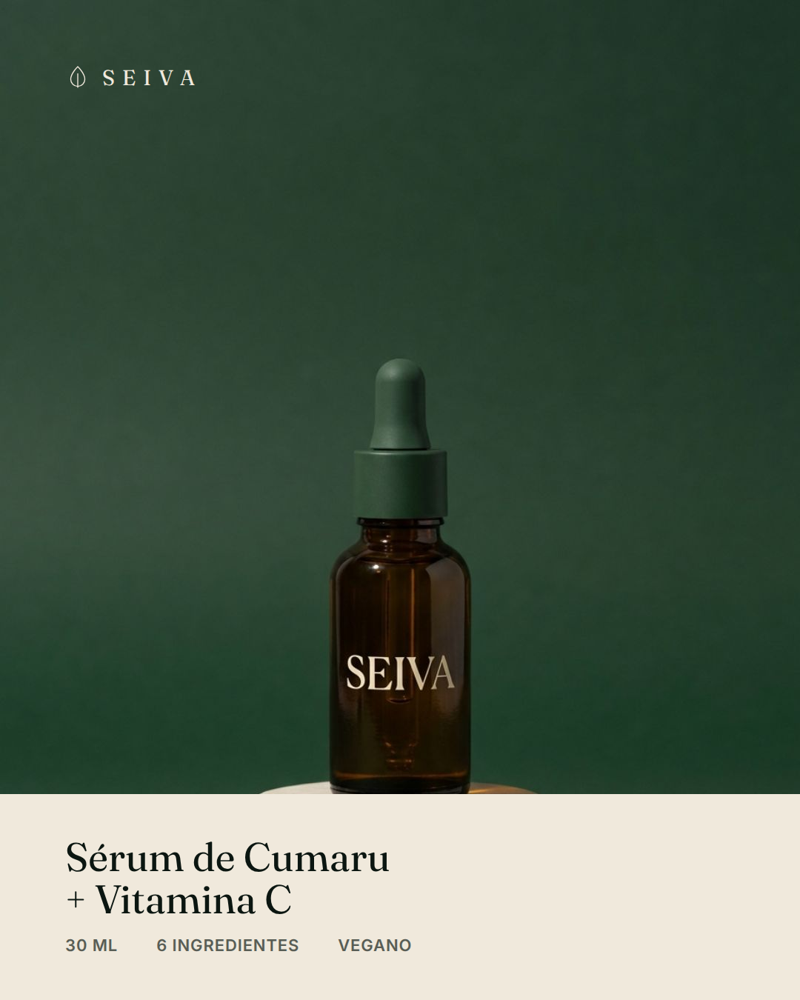

O processo
Uma marca,8 anúncios,zero designer.
Montei tudo numa conversa. O que interessa não é o resultado — é a ordem das etapas.



ARRASTA →
01


Cedilha fantasma no S de SEM. Acento sumido em PROTEÍNA. Num criativo que ia rodar com verba em cima.
O modelo não errou desenho. Errou texto — e texto é a única parte do anúncio que não pode ter chute.


 4:5
4:5